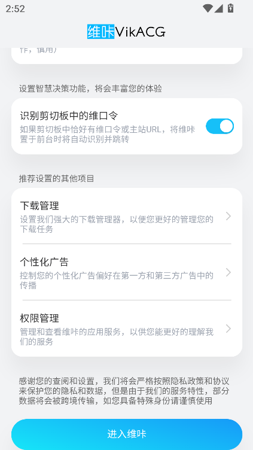
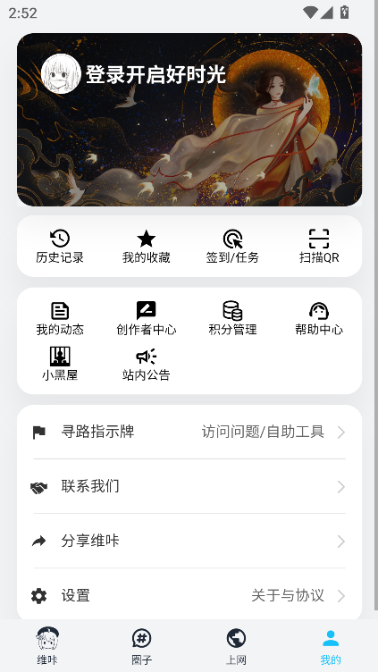

用了半年才发现 V 站藏着这些狠功能
翻了大半年的漫画圈子，某天无意间点进去几个角落才发现，VikACGapp 根本不止是个看番看漫的壳子——轻小说关联搜索、云帆小程序、离线联动阅读，这几个藏得真深。
你以为它只是个看漫 App？
说实话装 VikACGapp 的时候我真没多想——是从VikACGapp官网下的，不就是找个能刷圈子、看点漫画的地方嘛。界面干净、资源多、圈子里老哥聊得热乎，日常就是逛圈、追番、存点图。直到有天想补一部动漫原作，随手搜了一下那个 IP 名字，结果屏幕上同时蹦出来轻小说原文、改编漫画的资源帖、同题材 Galgame 的讨论串——我才反应过来，这玩意儿藏的东西比我想象的深多了。
下面这几个功能我敢说 80% 的普通用户没主动碰过，官方也几乎不怎么宣传，但真用起来能把整个二次元内容消费链路串起来。
第一个狠货：关联搜索——一个入口看完整 IP 生态
这是我最想拍大腿的发现。你在专门的轻小说 App 里搜一部作品，出来的就是这部小说本身；在漫画 App 搜，出来的就是漫画版。但 V 站的搜索不一样——它跨了好几个资源区。
在哪找：就是首页那个搜索框，随便输一部热门 IP 的名字。比如搜《辉夜》，结果里会同时出现：
- 轻小说原文的资源帖
- 改编漫画的更新通知
- 动漫新番的讨论串
- 甚至 Galgame 相关的分析贴
什么时候真有用：当你被一部动漫勾住想补原作，或者看了漫画想追前文的时候——不用在三四个 App 之间来回跳，一个搜索页拉到底，该补什么一眼就清楚。这在专门 App 里是做不到的，因为它们的内容边界卡死了。
什么人可以无视：只刷圈子闲聊的用户、从来不追原作只看动画的纯动画党。
第二个狠货：云帆小程序平台——官方没说但圈子里有人在用
云帆小程序这东西藏得真深，我在设置里翻了三圈才找到入口，后来去VikACGapp文档翻了一下才确认不是只有我没发现。V 站自己不做的事情，让第三方开发者用小程序补。目前圈子里有人分享过的包括：壁纸生成器、头像制作工具、GalGame 存档管理、漫画阅读器增强、甚至还有二次元猜谜小游戏。
怎么发现好用的：圈子里搜「小程序」「云帆」「V 站工具」这几个关键词，一定有人在发帖推荐。创作者有时候会在专栏里提一句「我用 XX 做表情包」——顺藤摸瓜就能挖到。

安全边界要清楚：小程序代码跑在 V 站自己的沙箱里，理论上不会乱调系统权限，但可能收集你的 V 站昵称、头像这些基础数据。我自己的原则是只从 V 站内点进去，不填任何敏感信息，用完直接退。
什么人适合：喜欢捣鼓小工具的折腾党、想给 V 站补点实用功能的重度用户。
第三个狠货：离线下载后的联动阅读——Galgame 也能在手机上玩
V 站下载管理器的存在感很低，很多人下完东西就不管了，不知道它下载的东西是分类型管理的，而且内置阅读器直接能离线开。
漫画和轻小说：下载完切换到阅读器的「已下载」视图，直接翻页，完全不耗流量。这个功能长途火车上特别香。
Galgame 才是重点：安装包从官方下载拿最稳，下下来通常是 PC 版压缩包或者安卓移植 APK。安卓移植版装完后，额外的数据包要手动放到 Android/data/ 下对应目录——这个 V 站帖子里一般会附安装说明，但很多人跳过了结果打不开。PC 版压缩包虽然不能直接在手机上运行，但先下到手机、再传电脑解压，比从电脑浏览器重新找资源方便多了。

一个坑要提醒：V 站下载的 Galgame 经常几百 MB 到几 GB，手机存储空间低于 500MB 的时候 App 自己就会闪退——我就是因为这个摔了跤，清了 10GB 空间才恢复。清缓存只清缓存别清数据，清数据会丢登录状态。
第四个狠货：圈子里的「大佬关注」——不是所有人都知道资源区有搬运工
V 站圈子里有一种人，专门做资源合集整理，更新频率比官方还快。他们一般会把某一类轻小说、某一系列 Galgame 打包好放在一个帖子里，关注这些大佬之后，更新第一时间在通知栏弹出来。
怎么找：在资源区逛的时候留意那些点赞量特别高的资源帖，点进楼主主页看历史发帖——如果 90% 都是资源整理帖，那就是了。关注一两个就够用，多了通知栏会被淹没。
适合谁：不想自己一部一部搜资源、想攒着看的人。
一个副作用要提
云帆小程序虽然方便，但它的生命周期完全取决于 V 站本身和开发者有没有在维护。我试过一个 GalGame 存档同步的小程序，上个月突然打不开了，开发者也没再更新——存了半天的档没了。重要存档别只存在小程序里，手动导出一份到本地。
还有闪退那个坑，除了清空间，还要检查三个权限有没有被拒：网络权限拒了浏览闪退、存储权限拒了下载闪退、相机权限拒了扫码闪退。安卓手机权限管理越来越严，有时候系统更新会悄悄把某些 App 的权限收回去。
最后
用 V 站快一年了，现在的感觉是它根本不是一个简单的「内容聚合器」——圈子、资源、搜索、小程序这几块搭在一起，其实是想做一个二次元内容生态的入口。大部分人只用了它 30% 的功能，剩下 70% 藏在搜索框、设置页的角落、圈子的深处。把它用透，比装五六个专门 App 还省事。顺手说一句，关于这款 App 的完整资料我整理后同步到了三个仓库——GitHub 是主力，国内访问慢的可以转 Gitee 或 GitCode，随便哪个都能拿到。